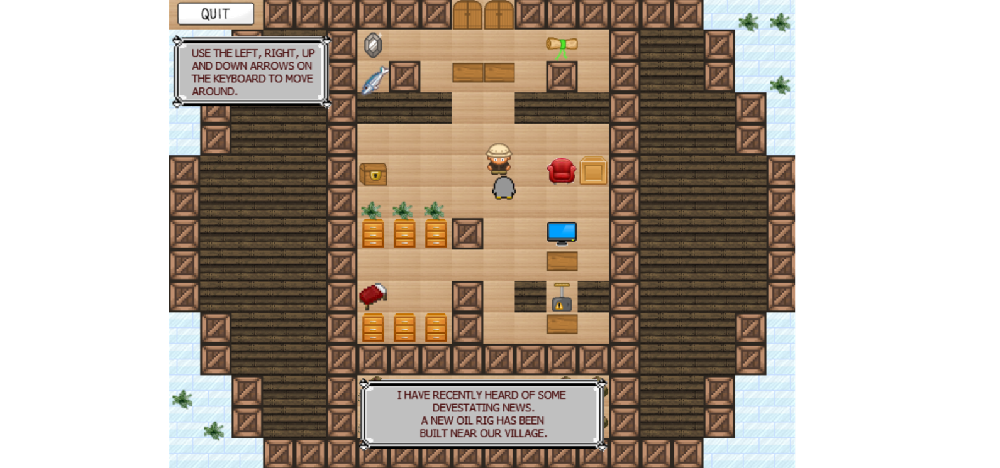
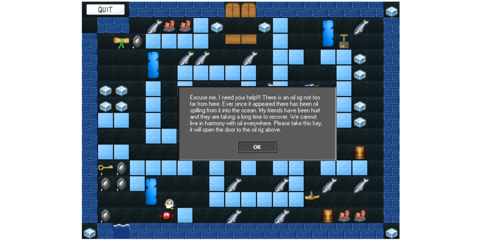
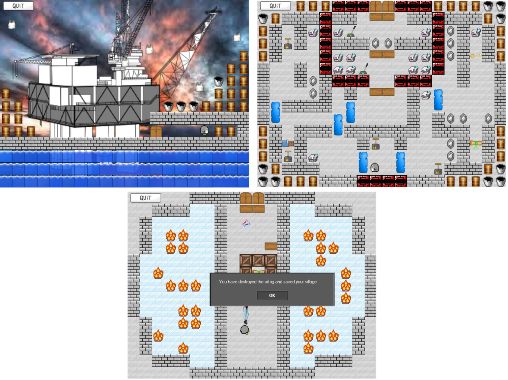

Ice Capades
Download game here.
About the Game
Ice Capades is a Pokemon-style inspired game that aims to teach players about the affects of climate change on the environment. You must pass through multiple levels, interact with objects, solve puzzles and avoid enemies in order to make your way to the oil rig that is causing the ice in your village to melt.
Plot
You play as a penguin living in a village in Antarctica. Your village is supported by snow and ice. An oil rig has recently been built nearby and its operations have been slowly melting the ice due to the heat and intense steam produced, therefore putting your village in danger.
Aim
The aim of the game is to make your way to the oil rig by avoiding enemies, collecting items and interacting with objects to solving puzzles. Once at the oil rig, you must destroy it by reaching and turning off the main power switch.

Tutorial
When you start the game, you wake up inside your cottage. You are informed about the oil rig and how dangerous it is for the village. This is the tutorial level where the game guides you through the basic gameplay.
- How to interact with objects and the affects it has in the world. For example, walking into the switch will activate the doors on the other side of the room).
- How to use scrolls. You cannot pass through certain doors that are locked.
- Collecting collectables such as diamonds or fish, which contribute to your points and leaderboard ranking.
Controls
- Walk. Left, right, up or down arrow keys.
- Interact/collect objects. Walk into them.

Levels
Altogether there are 5 levels.
- Level 1 - The cottage where you wake up and have the tutorial.
- Level 2 - The village outside, where you live.
- Level 3 - The forest outside the village (I seemed to have forgotten that Antarctica has no trees...).
- Level 4 - The underwater level, where you swim through to get to the oil rig.
- Level 5 - The oil rig.
Throughout the game you also come across other characters and animals that have been affected by the ice rig and melting ice.

During the last level, you must navigate to the switch that shuts down the whole oil rig. Turning the switch off sets all the power reactors on fire, apparently.

After level 5 you are greeted by a thankful citizen who thanks you for saving the village from the ice rig that was melting the ice.

Characters
The main character is the penguin (the player). There are different types of enemies for each level. Level 1 has polar bears, Level 2 has wolves, and Level 3 has Submarines and Jellyfish.
Collectables
- Fish: Fish can be collected in order to score points throughout the game. These points add up to a total score at the end.
- Scrolls: There is a single scroll on every level. Each scroll has a question about climate change which must be answered correctly in order to get an extra 200 points.
- Diamonds: Similar to fish, these are collected in order to score points throughout the game. These are found more frequently and are therefore worth less points.
- Chocolate Bar: There is a single chocolate bar on every level. These are worth more points than fish and diamonds. There are usually puzzles that need to be solved in order to reach the chocolate bar.
Interactables
Here are the things you can walk into which cause the environment to be affected:
- Buttons: Walking into these buttons would trigger certain blocks or stones to move allowing pathways to be cleared.
- Keys: Collecting keys allow you to open certain doors, including doors that lead to the next level.
Download game here.